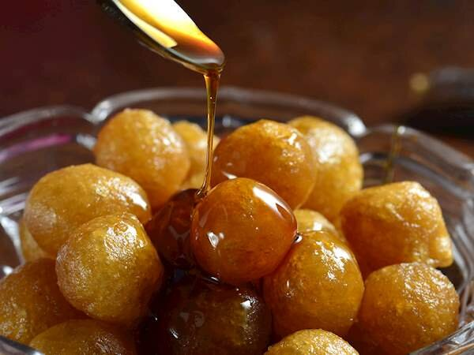
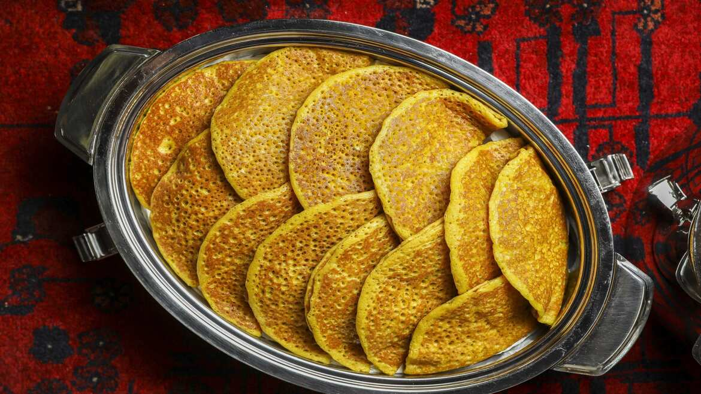
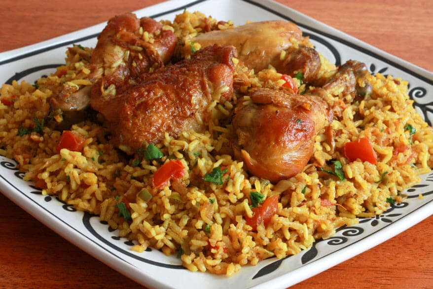

Dubai
Foods
Laqaimat

Luqaimat (or Awamat) are middle eastern fried dough fritters dunked in simple syrup. They are
crunchy on the
outside and soft and airy on the inside; so addictive and so easy to make!
Chebab

Chebab is an Emirati pancake made of slightly fermented batter using yeast, which is flavored
with cardamom and saffron, usually enjoyed with honey and /cheese.
Chebab is widely served
in most Arabic /Emirati
restaurants as a breakfast dish. It is soft and super delicious too!
Chicken Machboos

Chicken Machboos, also known as “chicken & rice kabsa”, is a popular rice dish from the
Arabian Gulf. It
is a fragrant one-pot rice dish that uses a lot of whole spices to infuse so much flavour!